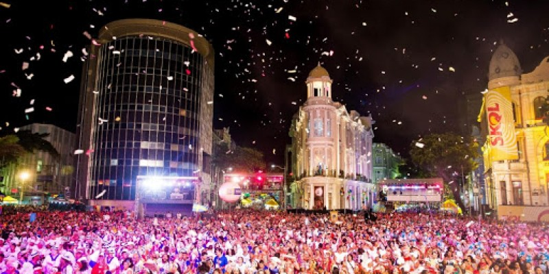

Marco zero - Recife
Aqui você encontra informações sobre este ponto turístico!!!
O que é o Marco Zero?
A Praça Rio Branco, também conhecida como Marco Zero, é um espaço público localizado no bairro de Recife, capital de Pernambuco, localizada na Av. Alfredo Lisboa conectada às ruas Marquês de Olinda, Rio Branco e Barbosa Lima. É deste marco que são feitas todas as medidas oficiais de distâncias rodoviárias locais.

Carnaval
É uma região de forte movimento durante o Carnaval, onde normalmente acontece a abertura do Carnaval e onde acontecem diversos shows gratuitos com extrema lotação.
Culinária
Nos entornos do Marco Zero você encontra uma diversidade de restaurantes para provar da culinária local e se deliciar com o tempero da cidade. Você pode acessar dicas desses locais no link a seguir.